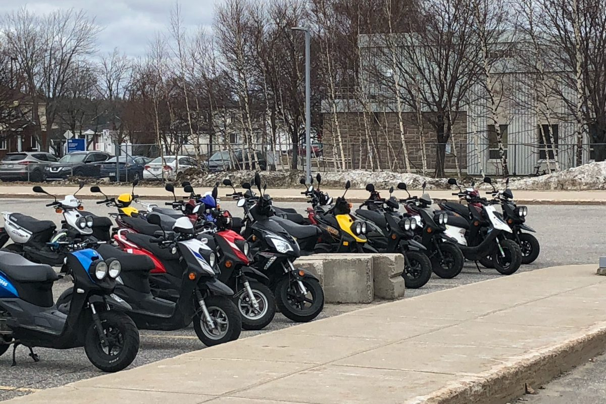
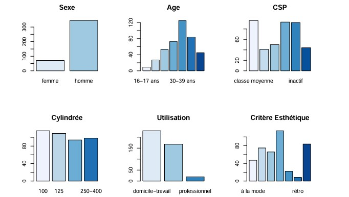
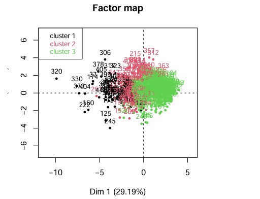

Segmentation d'utilisateurs de scooters

Dans ce projet, il s’agissait de dresser une segmentation de client de scooter à partir des notes attribuées et d’informations personnelles comme l’âge, le sexe et la catégorie socio-professionnelle.
Les questions auxquelles nous avons tenté de répondre étaient :- Quels sont les profils types d'utilisateurs de scooters en fonction des données démographiques et d’usage ?
- Quelles sont les différences d’utilisation des scooters entre hommes et femmes ?
- Quel type de scooter convient le mieux aux profils hommes et femmes ?

- Préparation des données : Importation, traitement des données manquantes, et conversion des variables.
- Analyse descriptive : Réalisation d’analyses univariées et bivariées pour obtenir un aperçu général.
- Analyse factorielle et classification : Utilisation de l’ACP pour définir des axes de différenciation, suivi d’une classification hiérarchique pour créer des clusters.
- Profilage et segmentation : Définition des profils clients en fonction des critères identifiés et des clusters obtenus.

- 4 types de clients ont été identifiés, segmentés principalement par la catégorie socio-professionnelle, le sexe et les préférences de cylindrée et d'esthétique.
- Les femmes préfèrent des scooters de plus petite cylindrée, au style sobre et rétro, tandis que les hommes favorisent des scooters de grosse cylindrée, innovants et rappelant les motos.
- Recommandations pour adapter le design des scooters en fonction des attentes spécifiques des différents groupes (ex : cylindrée et critères esthétiques).